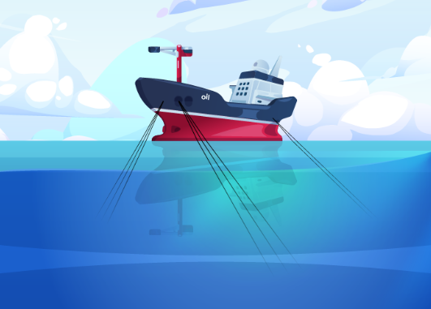

O projeto Big Anchoring
{kind=link}
O Big Anchoring é um projeto inovador, projetado para revolucionar o processo de ancoragem de FPSOs (Floating Production Storage and Offloading) em múltiplos aspectos essenciais. O projeto se destaca por sua contribuição no gerenciamento e tratamento eficiente dos dados obtidos através do sensoriamento das plataformas, garantindo que as informações críticas sejam processadas com precisão e rapidez.
Além disso, o Big Anchoring permite a flexibilidade de utilizar diferentes infraestruturas, sejam elas em nuvem (cloud) ou locais (on-premises), para otimizar o processamento de tarefas, oferecendo soluções adaptáveis às necessidades específicas de cada operação. Outro ponto forte do projeto é sua interface gráfica, que combina robustez com uma usabilidade intuitiva. Essa interface simplifica a visualização e o monitoramento dos dados disponíveis, proporcionando uma experiência de usuário mais fluida, clara e eficiente.
Para atuar de forma eficiente nos diferentes aspectos do processo de ancoragem de FPSOs, o projeto Big Anchoring é dividido em três módulos principais: Gerenciamento de Dados, Processamento e Visualização. Esses módulos trabalham em conjunto para garantir o tratamento adequado dos dados, a otimização do processamento em diferentes infraestruturas (cloud e on-premises), e a visualização intuitiva das informações disponíveis.
{kind=link}
Módulo de Gerenciamento de Dados Críticos
Esse módulo apresenta uma plataforma Big Data e sistemas distribuídos, otimizada para o eficiente tratamento de grandes volumes de dados em sistemas críticos, como a ancoragem de FPSOs, utilizando datalakes e ecossistema Kafka.
Eficiência no Gerenciamento de Dados Críticos
Esse módulo do Big Anchoring é uma inovadora plataforma baseada em Big Data e sistemas distribuídos, dedicada ao gerenciamento eficiente de grandes volumes de dados em sistemas críticos, como a ancoragem de FPSOs. Com uma arquitetura escalável de sistemas distribuídos, destaca-se por sua capacidade de criar datalakes organizados para armazenamento e manipulação de dados estruturados e não-estruturados. Essa solução é essencial para o controle eficaz de informações vitais em ambientes de produção de óleo e gás offshore.
Big Anchoring Machine learning Module
Com o aumento da complexidade dos modelos de inteligência artificial para o monitoramento de FPSOs e o consequente crescimento do volume de dados processados, a necessidade de um aumento significativo na capacidade computacional torna-se evidente. Esse incremento é crucial para garantir a execução eficiente das tarefas, o que torna indispensável o uso de infraestruturas de High-Performance Computing (HPC). Essas infraestruturas podem ser implementadas como clusters on-premises ou por meio de recursos em nuvem (cloud), oferecendo a flexibilidade e escalabilidade necessárias para atender às demandas do projeto.
O módulo Big Anchoring Machine Learning oferece um serviço que facilita a utilização de diferentes infraestruturas, sejam elas clusters on-premises ou estruturas em nuvem. Com ele, os usuários podem submeter tarefas, quando autorizados, tanto para a estrutura HPC da Petrobras (atena02) quanto para as infraestruturas da Amazon (AWS) e da Microsoft (Azure), proporcionando escalabilidade e acesso a grande poder computacional.
A forma escolhida para permitir que o usuário acesse o serviço do Big Anchoring Machine Learning Module é por meio de uma biblioteca Python. Essa biblioteca facilita a utilização dos serviços, permitindo que sejam acessados de maneira semelhante à chamada de funções em Python, sem a necessidade de se preocupar com requisições diretas ao serviço.
Big Anchoring Data Visualizer Module
Com o intuito de fornecer uma ferramenta que facilite a visualização dos diferentes monitoramentos necessários ao processo de ancoragem de uma FPSO, foi desenvolvido o Big Anchoring Data Visualizer, que oferece uma interface gráfica amigável e intuitiva.
{kind=link}